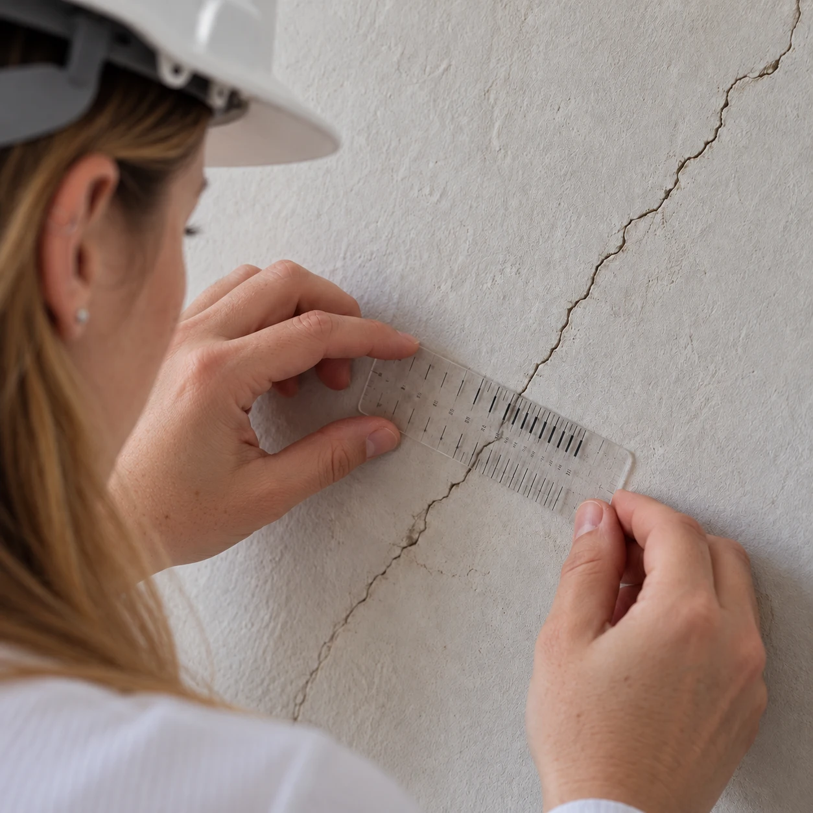
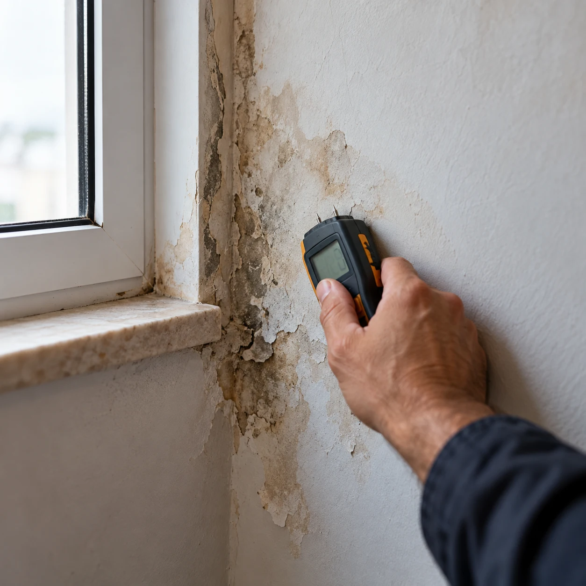
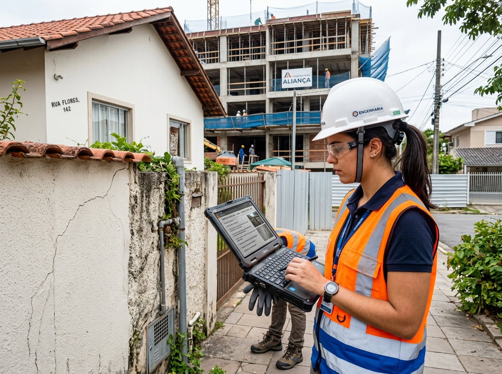
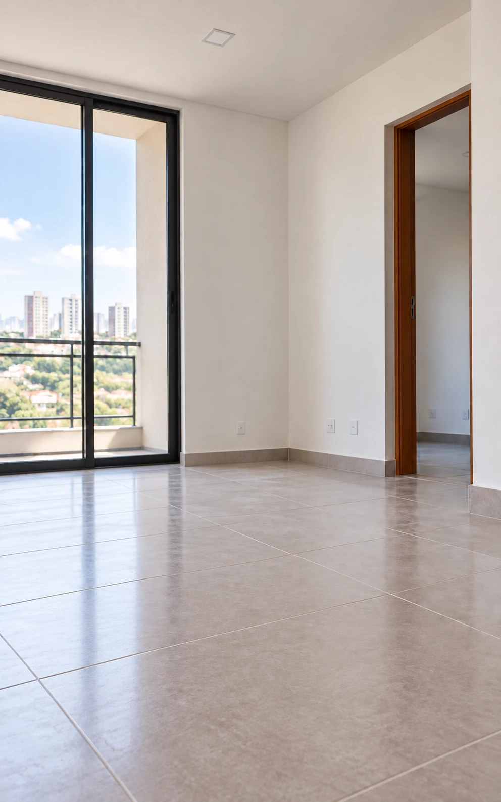
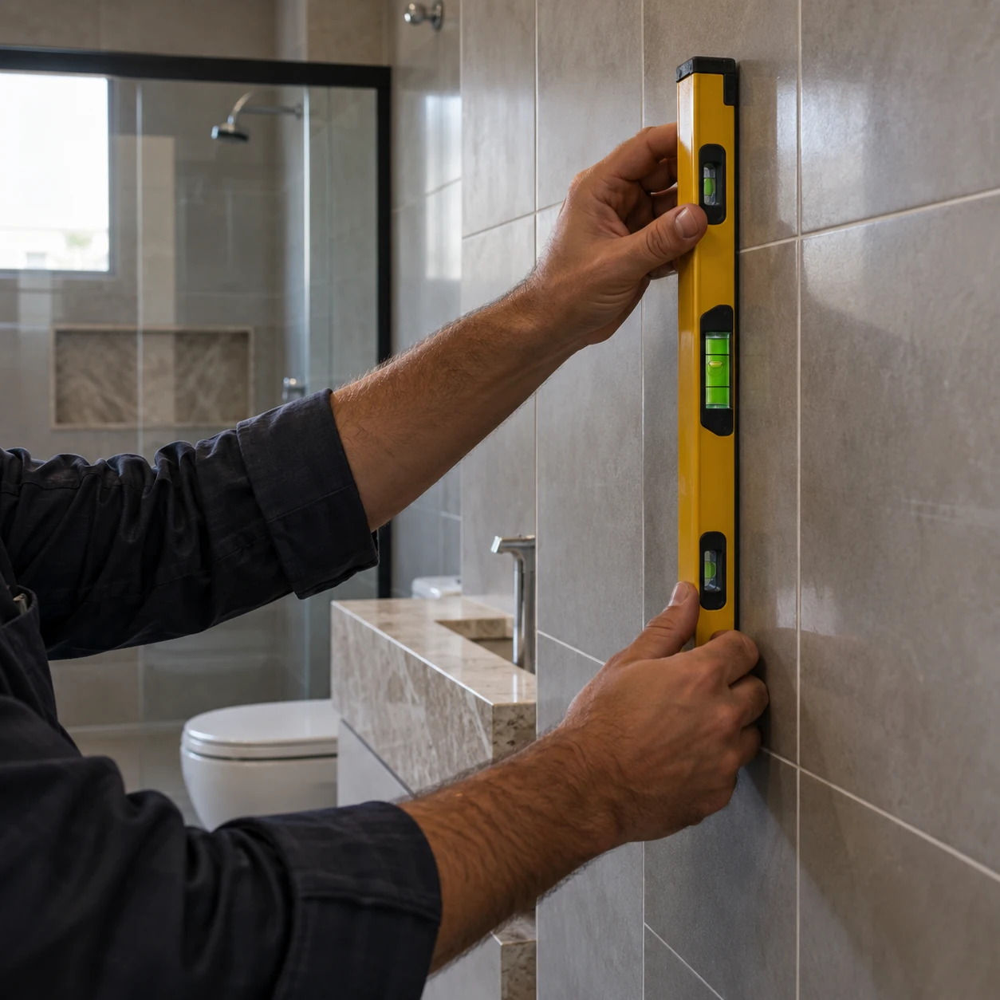

Substitua a incerteza por uma resposta técnica, documentada e defensável. Laudos de vistoria, diagnóstico de patologias construtivas e perícias com rigor técnico e respaldo legal em todo o Mato Grosso do Sul.

Melhoria da qualidade construtiva
Processos claros e organizados
Apuração de responsabilidade técnica
Avaliação de impacto técnico e financeiro
Indicação do procedimento correto (reparo, manutenção ou correção)
Engenharia diagnóstica com método rigoroso, embasamento normativo e independência profissional.
Vistorias cautelares de vizinhança, vistoria de entrega de obra e pré-compra de imóvel com registro técnico minucioso.

Identificação da causa raiz de fissuras, infiltrações, eflorescências, corrosão de armadura e recalque de fundação.
Perícias judiciais e extrajudiciais com valor probatório, auditoria de obras e avaliação imobiliária pela NBR 14653.

Segurança técnica fundamentada para proteger seu patrimônio, dirimir litígios e respaldar decisões críticas.
Vistoria cautelar de vizinhança, vistoria de entrega de obra e pré-compra de imóvel. Documentação comprobatória com registro fotográfico e análise técnica.
Saiba maisApuração precisa de fissuras, infiltrações, eflorescências, corrosão de armaduras e recalques de fundação com indicação da conduta técnica correta.
Saiba maisInvestigação técnica com valor probatório para fins judiciais, extrajudiciais, seguradoras e suporte pericial aos escritórios de advocacia.
Saiba maisConsultoria técnica para construtoras e incorporadoras, auditoria documental de obras e avaliação técnica patrimonial de imóveis.
Saiba maisSoluções de engenharia diagnóstica personalizadas para cada perfil de tomada de decisão.
Segurança antes de comprar, vender ou reformar. Esclarecemos se trincas e infiltrações representam riscos e fornecemos laudos defensáveis.
Consultoria preventiva durante e após a obra, auditoria documental de conformidade e blindagem técnica contra passivos futuros.
Inspeção predial preventiva, laudos de recebimento de áreas comuns e pareceres técnicos para acionar garantias de construtoras.
Assistência técnica pericial, formulação de quesitos, impugnações e laudos com alto valor probatório em processos cíveis e cautelares.
Vistorias prévias de risco e regulação técnica de sinistros em edificações, com apuração de nexo causal e responsabilidade.
Envie sua demanda para análise inicial e receba uma orientação técnica personalizada com a Eng.ª Camila.
Chamar no WhatsAppExemplos práticos de atuações realizadas com precisão técnica e segurança jurídica.


Combinamos fundamentação normativa, investigação técnica in loco e independência profissional para entregar laudos irrefutáveis.
Análise inicial da demanda, histórico do imóvel, levantamento documental e definição precisa do escopo técnico aplicável.
Inspeção presencial com registro fotográfico de alta precisão, mapeamento de anomalias e coleta de dados físicos da edificação.
Redação fundamentada nas NBRs (incluindo NBR 14653 quando aplicável), determinação de nexo causal e parecer técnico defensável.
Entrega formal do laudo com emissão de ART junto ao CREA-MS e orientação técnica direta para subsidiar sua decisão com total segurança.
